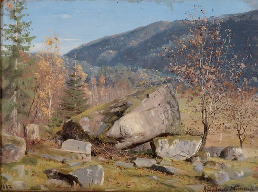

1. Høstdag._Bjelland,_Mandal_(1862)
Amaldus_Nielsen_(Norwegian,_1838_–_1932)
视觉
- 构图：横向构图
- dominant palette: #90b0c0, #907060, #a08060, #807060, #807050
用途
- 书籍插图
- 童话配图
- 故事封面
- 明信片
Prompt seed
classic book illustration watercolor, Høstdag._Bjelland,_Mandal_(1862), public domain print